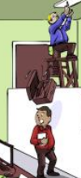
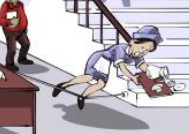
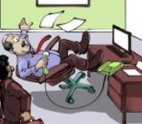
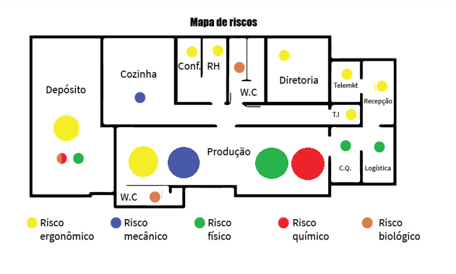

Página Inicial
Anterior
/
Próximo
Saúde e Segurança do Trabalho
Superação A: Riscos e Acidentes
Marcos Vinícius - AI-APW-01
Acidentes de trabalho → Atos inseguros
- Riscos comportamentais:
Por distração, causa tropeços, quedas e escorregões.

|

|

|
Por descuido, há a falta de calçado e falta do uso do corrimão, cigarro aceso no ambiente de
trabalho, chão molhado sem sinalização.
- Riscos Ergonômicos: Postura inadequada, queda da cadeira

- Riscos Químicos: Transporte de barril sem cuidado

Acidentes de trabalho → Mapa de Riscos
